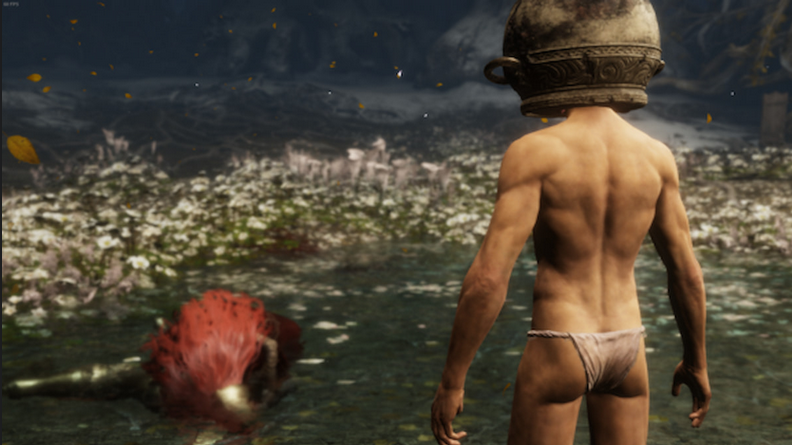

Elder Ring tem um novo Heroi!

🔥 Herói da Comunidade de Elden Ring: “Let Me Solo Her” Brilha na Escuridão! 🔥
Nas sombras implacáveis do mundo de Elden Ring, onde heróis são raros e a morte espreita a cada esquina, surge uma figura improvável: Let Me Solo Her. Esse nome, que ecoa como um sussurro nos corredores virtuais, representa mais do que um jogador habilidoso; ele personifica a compaixão, a tenacidade e a generosidade em meio à adversidade.
!Let Me Solo Her
A Lenda de Malenia
Malenia, a temida e desafiadora chefe, é o epicentro dessa história. Ela não é obrigatória para a conclusão de Elden Ring, mas sua fama se espalhou como fogo entre os jogadores. Seus movimentos graciosos e sua dança aquática são traiçoeiros, testando até os mais destemidos guerreiros. Muitos anseiam por derrotá-la, mas poucos conseguem.
O Altruísmo de Let Me Solo Her
Let Me Solo Her (ou LMSH, como é carinhosamente chamado) não é um herói convencional. Ele não usa armaduras reluzentes nem empunha espadas lendárias. Em vez disso, ele se apresenta nu, com um pote na cabeça, à porta da câmara de Malenia. Sua missão? Ajudar outros jogadores a superar essa batalha infernal.
Em um mundo predominantemente solitário, onde a solidão é a companheira constante, LMSH oferece sua ajuda. Ele deixa sua marca de invocação no chão, esperando ser chamado. Quando alguém o convoca, ele entra na arena e enfrenta Malenia sozinho, executando uma dança mortal que deixa todos boquiabertos. Ele não apenas garante a vitória para o anfitrião, mas também proporciona um espetáculo inesquecível.
A Origem da Lenda
A história de LMSH é simples e inspiradora. Após se apaixonar pelos jogos Souls ao jogar Dark Souls 3, ele escolheu a classe Samurai em Elden Ring. Sua primeira batalha contra Malenia foi uma provação: 242 tentativas e dois aliados para finalmente derrotá-la. Mas essa dificuldade extrema o motivou a ajudar outros jogadores.
“Escolhi Malenia para ajudar outros porque me apaixonei por seu design”, revela LMSH. “Seus ataques são graciosos e ela é implacável como chefe. Sua dança aquática é considerada a mais difícil de desviar entre todos os chefes da FromSoftware. Eu queria provar que não era impossível.”
O Legado Continua
Atualmente, LMSH está no nível 179 e avança no New Game+, focando em completar todas as missões secundárias. Ele não busca fama ou glória, mas sim a satisfação de ajudar outros jogadores a enfrentarem Malenia e seguir adiante.
Então, ergam suas espadas em homenagem a Let Me Solo Her, o herói silencioso que ilumina a escuridão de Elden Ring. Que sua lenda inspire a todos nós a sermos mais altruístas, mais corajosos e a enfrentar nossos próprios desafios com determinação. 🌟⚔️🔥